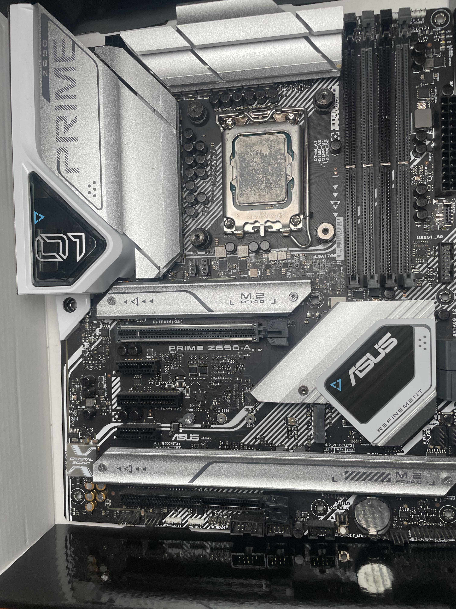

Step 2: Install CPU Fan
Materials Needed
- CPU Fan
- Motherboard
Instructions
- Locate the Mounting Holes on the Motherboard
- Insert the Screws into the Mounting Holes
- Identify the CPU Fan
- Attach the Bracket
- Secure the CPU Fan
Find the holes on the motherboard where the CPU fan will be installed. These are usually marked and align with the fan's mounting brackets.

Place the screws into the motherboard mounting holes to prepare for securing the fan.
Make sure you have the correct CPU fan for your processor. This fan helps to keep the CPU cool during operation.
Install the silver bracket that comes with the fan. This bracket has a hole to insert screws, which will secure the fan to the motherboard.

Finally, secure the CPU fan by screwing it into the bracket and mounting holes. Ensure it is firmly in place to maximize cooling efficiency.
Important Tips
- Align Properly: Ensure the fan aligns with the mounting holes to avoid improper installation.
- Secure the Screws: Tighten each screw evenly for a balanced fit.